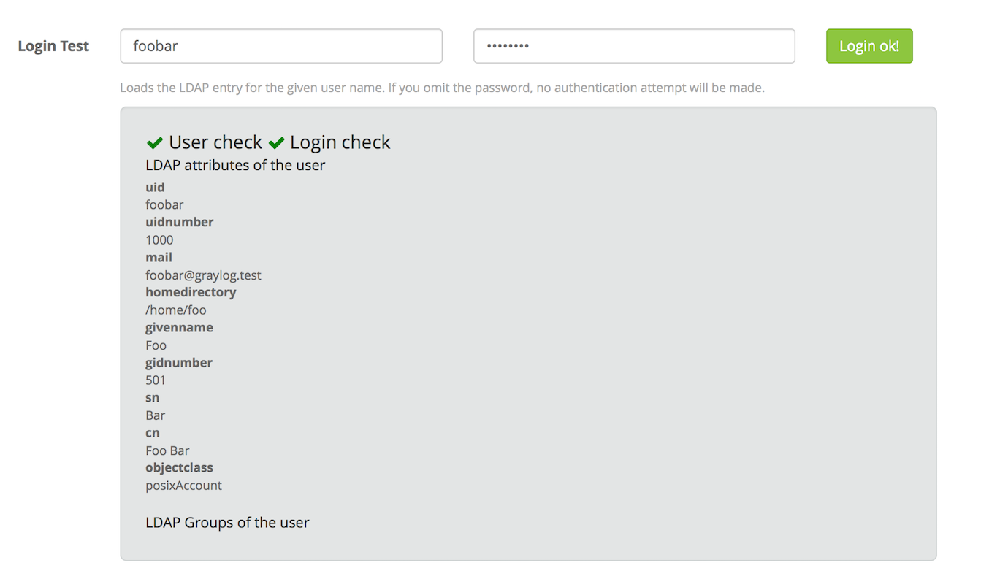
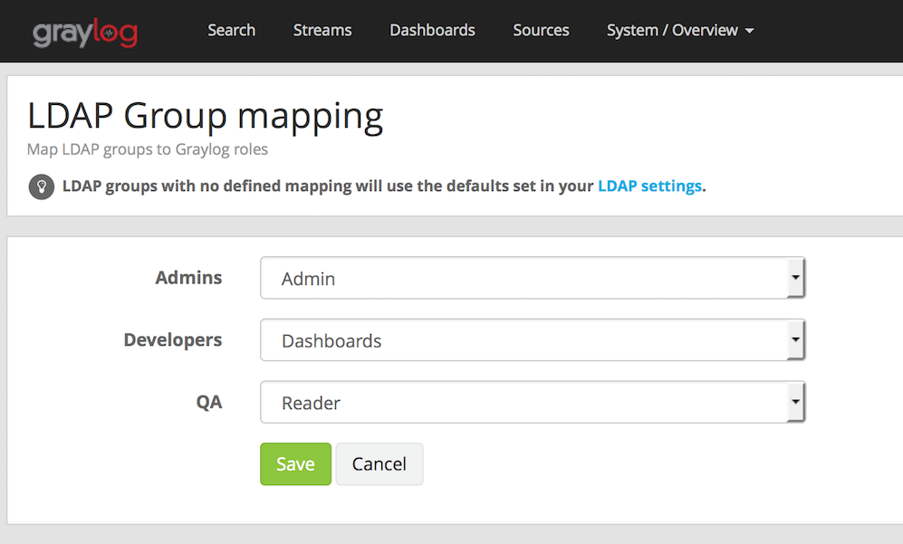

External authentication¶
LDAP / Active Directory¶
It is possible to use an external LDAP or Active Directory server to perform user authentication in Graylog. Since version 1.2, you can also use LDAP groups to perform authorization by mapping them to Graylog roles.
Configuration¶
To set up your LDAP or Active Directory server, go to System -> Users -> Configure LDAP. Once LDAP is enabled, you need to provide some details about the server. Please test the server connection before continuing to the next steps.
User mapping¶
In order to be able to look for users in the LDAP server you configured, Graylog needs to know some more details about it: the base tree to limit user search queries, the pattern used to look for users, and the field containing the full name of the user. You can test the configuration any time by using the login test form that you can find at the bottom of that page.
The login test information will indicate if Graylog was able to load the given user (and perform authentication, if a password was provided), and it will display all LDAP attributes belonging to the user, as you can see in the screenshot.
That’s it for the basic LDAP configuration. Don’t forget to save your settings at this point!
Group mapping¶
You can additionally control the default permissions for users logging in with LDAP or Active Directory by mapping LDAP groups into Graylog roles. That is extremely helpful if you already use LDAP groups to authorize users in your organization, as you can control the default permissions members of LDAP groups will have.
Once you configure group mapping, Graylog will rely on your LDAP groups to assign roles into users. That means that each time an LDAP user logs into Graylog, their roles will be assigned based on the LDAP groups their belong to.
In first place, you need to fill in the details in the Group Mapping section under System -> Users -> Configure LDAP, by giving the base where to limit group searches, a pattern used to look for groups, and the group name attribute.
Then you need to select which default user role will be assigned to any users authenticated with the LDAP server should have. It is also possible to assign additional roles to any users logging in with LDAP. Please refer to Roles for more details about user roles.
Note: Graylog only synchronizes with LDAP when users log in. After changing the default and additional roles for LDAP users, you may need to modify existing users manually or delete them in order to force them to log in again.
You can test the group mapping information by using the login test form, as it will display LDAP groups that the test user belongs to. Save the LDAP settings once you are satisfied with the results.
Finally, in order to map LDAP groups into roles, you need to go to System -> Users -> LDAP group mapping. That page will load all available LDAP groups using the configuration you previously provided, and will allow you to select a Graylog role that defines the permissions that group will have inside Graylog.
Note: Loading LDAP groups may take some time in certain configurations, specially if you have many groups. In those cases, creating a better filter for groups may help with the loading times.
Note: Remember that Graylog only synchronizes with LDAP when users log in, so you may need to modify existing users manually after changing the LDAP group mapping.
Troubleshooting¶
LDAP referrals for groups can be a problem during group mapping, in these cases please manage the user groups manually. In order to do this, the LDAP group settings must not be set.